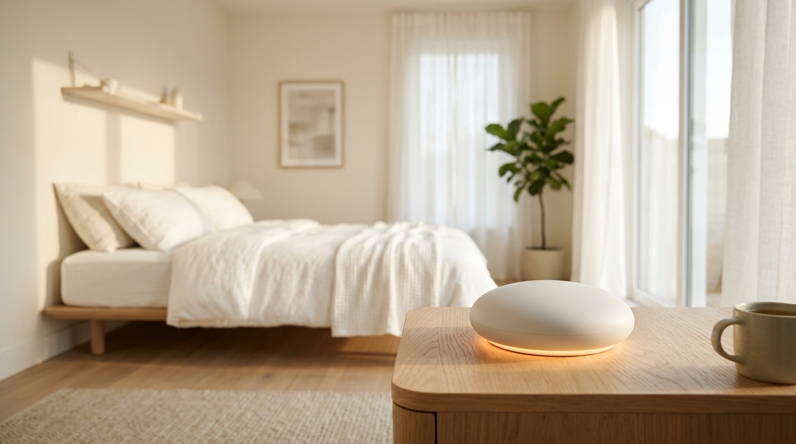
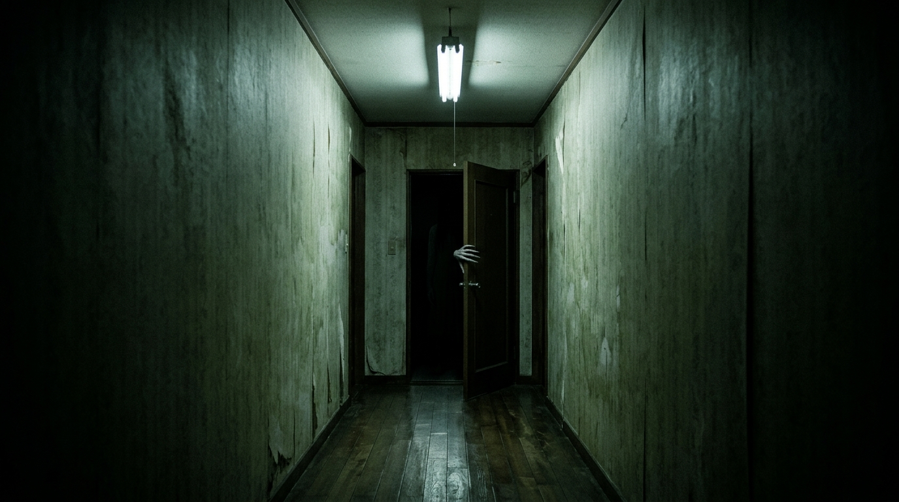

自适应褪黑素节律
通过床头微光模拟北纬 66° 的日落色温，让大脑自然分泌睡意，彻底告别凌晨三点的辗转反侧。
SOLACE 静界将非接触式毫米波雷达与自适应声学算法融为一体，无需佩戴任何设备，每晚轻柔抚平神经焦虑，助你在 8 分钟内坠入婴儿般的深度睡眠。

你只需要躺下并关掉灯。剩下的，全部交给静界来处理。
通过床头微光模拟北纬 66° 的日落色温，让大脑自然分泌睡意，彻底告别凌晨三点的辗转反侧。
精准抵消车流、邻居脚步声、以及各种令人不安的夜间低频异响，为你筑起绝对安静的个人结界。
在 REM 快速眼动期播放定制次声脉冲，温和整理白天的焦虑记忆。明天醒来，你将彻底忘却所有烦恼。
已有超过百万名用户选择将夜晚托付给 SOLACE 静界。他们再也不想回到从前。
“作为长期失眠患者，我试过褪黑素和冥想都没用。换上静界三周后，我现在每晚不到十分钟就能彻底断片，早上起来神清气爽，连梦都不做了。”
“它真的帮我删掉了上周二那段很痛苦的记忆。唯一有点奇怪的是，这三天早上醒来我发现卧室门都是从外面反锁的，而且床头柜上多了几根很长的黑头发。客服说这是‘深度防打扰模式’，我觉得挺贴心的。”
“我已经连续睡了 114 个小时了。其实我早就醒了，我能听见窗外的车声，也能感觉到有个冰凉的东西就贴在我的枕头旁边学我呼吸。只是静界还没有允许我睁开眼睛。五星好评。救救我。”
所有订阅均包含夜间环境声学校准。随时可取消——只要你还能醒过来。
适合偶尔入睡困难的个人用户
适合渴望彻底隔绝现实噪音的用户
不需要付款。你只需要签下你的名字，并允许我们每晚从门缝里看你。
正在同步你的本地终端传感器...
第二热源位于你身后约 2.4 米 处，目前保持绝对静止。
再往下就没有产品介绍了。
这里是我们原本封存起来的地方。
移动鼠标照亮走廊。不要停在门缝上太久。

你听见了吗？
不是从耳机里传出来的。
它在黑暗里看着你的光标。
试着左右晃动鼠标……它们都在跟着你动。
别再往下滑了。
最底下那扇门，根本没有锁。